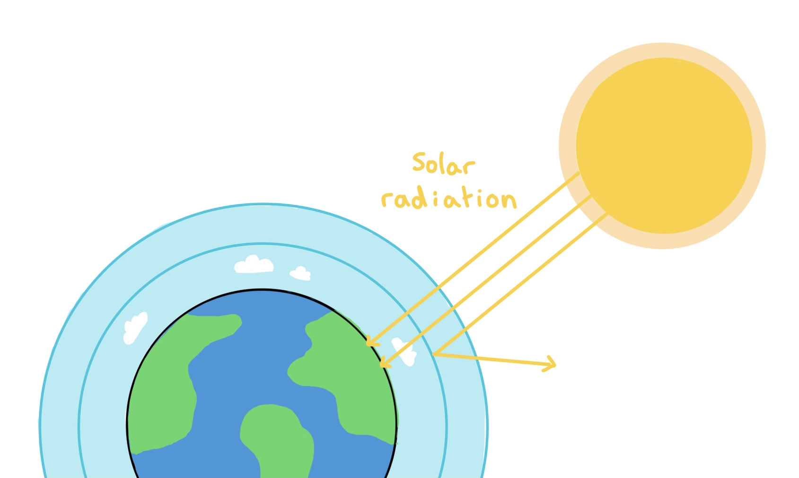

Common Misconceptions
Learn the facts of climate change and if its actually real
Learn moreClimate change is the long-term change in the Earth’s weather and temperature conditions. Over the past one hundred years the world has been warming up and a result weather patterns are shifting.
Lets learn the science behind climate change and how it actually works
In the Earth’s atmosphere there are gases, such as carbon dioxide, water vapour and methane, that are known as greenhouse gases.
Solar radiation, mostly visible light, passes through the atmosphere and heats up the Earth’s surface.

The surface then emits energy back upwards as infrared radiation.
Some of the heat escapes back into space, but the greenhouse gases in the atmosphere act as a blanket, trapping some of the escaping heat.
The natural greenhouse effect keeps Earth about 33°c warmer than it otherwise would be. Without it the planet would be frozen.
The warming of the Earth is not just a straight-line warming. It happens as a sequence of interactions in the climate system called a climate feedback loop. A positive feedback loop amplifies the original change, while a negative feedback loop dampens it.
Its important to note that “positive” doesn’t mean good. It just means it boosts the system.

Learn the facts of climate change and if its actually real
Learn moreFind out about the consequences of climate change and how is it affecting us
Learn moreInvestigate how politics is shaping our response to climate change
Learn more